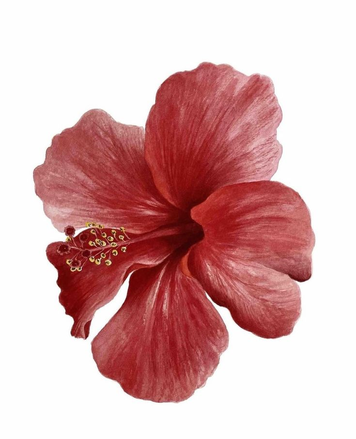
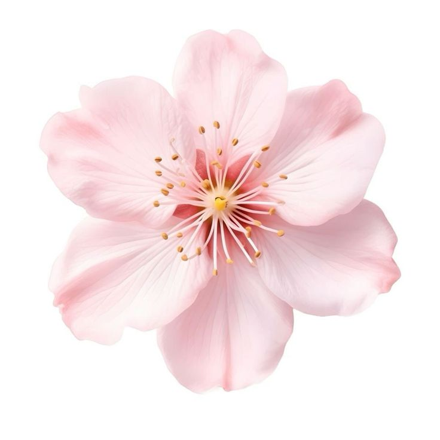
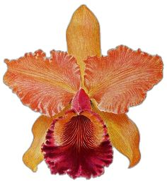
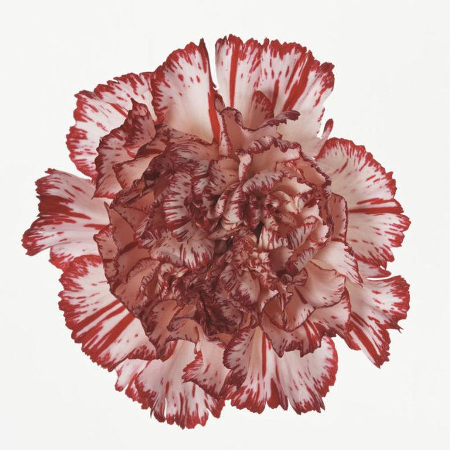

Helleborus, más comúnmente conocida como Rosa de Navidad

Hibiscus rosa-sinensis, llamado comúnmente rosa de China, cayena, amapola, hibisco, entre otros nombres

La sakura (桜 o さくら), la flor de cerezo o el cerezo japonés

El clavel o clavelina (Dianthus caryophyllus) es una planta herbácea perteneciente a la familia de las Caryophyllaceae

Las orquídeas u orquidáceas (nombre científico Orchidaceae) son una familia de plantas monocotiledóneas que se distinguen por la complejidad de sus flores